7045A84 Front set BACKREST COVER - R.R. with seat removed
- Path
- Procedures > 70 FITTINGS > 7045 FRONT SEATS > 7045A front seat assembly > 7045A84 Front set BACKREST COVER - R.R. with seat removed
- Kind
- repair procedure (removal / refitting; the operation number is the code)
- Applies to
- all engines; all production periods
- Interactive page
- https://sloeber94.github.io/elrnDB-a147/en/#/3025855
Applies to: all engines; all production periods
Applies to: all engines; all production periods
 Removing
Removing
 Refitting
Refitting7045A25 squab lumbar knob - r r
1. Undo the rear bolts fixing the side pocket shields.
2. Disconnect the two bottom ends of the squab cover, hooked onto each other.
3. Pass the end of the trim through from the front part of the squab.
4. Lift the cover as much as possible.
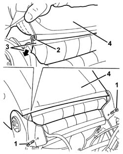
Applies to: all engines; all production periods
1. Release the cords from the retainers.
2. Insert a hand under the cover and disconnect the side tensioning hooks.
3. Lift the cover as much as possible.
4. Disconnect the central flexible retainer and take out from the front side of the squab.
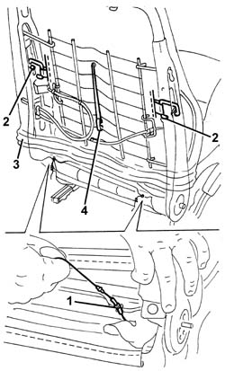
Applies to: all engines; all production periods
1. Raise the seat release handle (1a) and undo retainers (2b).
2. Remove panel (2a) by undoing retainers (2b).
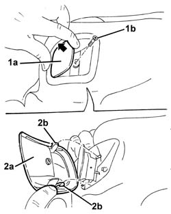
Applies to: all engines; all production periods
1. Raise the trim as far as possible and release the head restraint pin retaining tabs.
2. Remove the head restraint.
3. Disconnect the trim upper retaining profile.
4. Using pliers, disengage the cord end retainers.
5. Pass the retainers and upholstery cords (5a) through the passages (5b) in the padding.
6. Remove the squab cover.
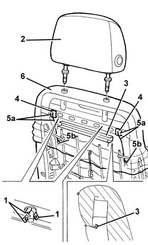
Applies to: all engines; all production periods
1. If necessary, disconnect squab heat pad electrical connection (1a) and remove padding (1b).
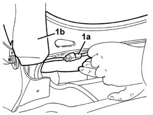
Applies to: all engines; all production periods
Refitting
RemovingCheck that the cover is intact and shows no signs of damage.
1. Check that the identifying mark of the Air Bab squab cover is on the same side as the side Air Bag module.
If a new squab cover is fitted, attach the labels as described below.
2. Remove the removable part (2b) of the adhesive label from the new squab cover (2a). Place a copy of the label (2b) in a specific file containing the vehicle details (model, registration data, chassis number) and the serial number of the old squab cover. This file should be kept for future checks.
3. Apply the original label (2b) at the bottom of the seat, where there are already the equivalent labels for seat, side Air Bag module and Air Bag wiring.
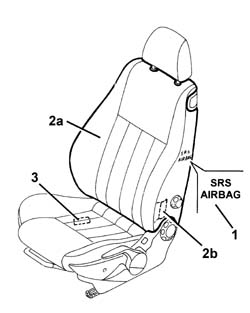
Applies to: all engines; all production periods
1. Check that the tensioniong hooks are present and positioned correctly in the rear of the cover.
2. Check the condition of the retaining profiles.
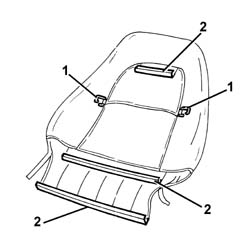
Applies to: all engines; all production periods
1. Check that the flexible retainer (1a) and upholstery cords (1b) are present and positioned correctly in the front of the cover.
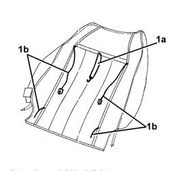
Applies to: all engines; all production periods
If removed, position the padding and connect the electrical connection with the squab heat pad.
Position the trim on the top of the squab.
Pass the upholstery cords through the passages in the padding.
Engage the cord end retainers.
Connect the trim upper retaining profile.
Lower the trim.
Position the seat release handle panel and engage with its retainers. Then do up the screw.
Connect the central elastic to the retainer.
1. Connect the side tensioning hooks.
Position the head restraint and fit into its seat. Engage the retaining tabs.
2. Pull the upholstery cords and attach them to the retainers.
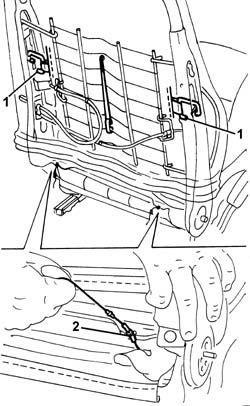
Applies to: all engines; all production periods
Fully lower the trim and hook the two bottom ends of the squab cover to each other.
Tighten the side shield rear retaining bolts.
Applies to: all engines; all production periods
Applies to: all engines; all production periods; only with equipment: GTA
Removing
Refitting7045A25 squab lumbar knob - r r
7045A43 seat exterior guard - r r
7045A44 seat interior guard - r r
7045A98 front seat rear pouch panel, lh or rh - r r
1. Lift up the backrest folding lever (1a) and undo the bolt (1b).
2. Remove panel (2a) by undoing retainers (2b).
Applies to: all engines; all production periods; only with equipment: GTA
1. Release the lower ends (1a) of the backrest cover from the profile (1b).
2. Using cutters, cut the rear retaining hooks on the squab cover.
3. Release the velcro retainers.
4. Detach the adhesive retainers securing the upholstery to the metal structure.
5. Release the front profile (1b) for the backrest cover from the metal structure retainer (5a).
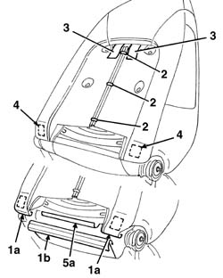
Applies to: all engines; all production periods; only with equipment: GTA
1. Working at the front of the backrest, lift up the lower section (1a) of the cover and release the strip of velcro (1b).
2. Using cutters, cut the retaining hooks (2a) and lift up the backrest cover (1a) gradually until it is in position (2d) cutting all the retaining hooks (2b) and release all the strips of velcro (2c).
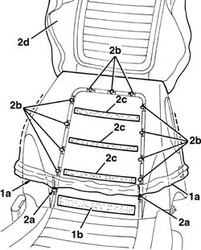
Applies to: all engines; all production periods; only with equipment: GTA
1. Using cutters, cut the retaining hooks (1a) in the area of the head restraint, then completely detach the backrest cover (1b) from the upholstery (1c).
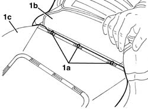
Applies to: all engines; all production periods; only with equipment: GTA
Refitting
RemovingCheck that the cover is intact and shows no signs of damage.
1. Check that the identifying mark of the Air Bab squab cover is on the same side as the side Air Bag module.
If a new squab cover is fitted, attach the labels as described below.
2. Remove the removable part (2b) of the adhesive label from the new squab cover (2a). Place a copy of the label (2b) in a specific file containing the vehicle details (model, registration data, chassis number) and the serial number of the old squab cover. This file should be kept for future checks.
3. Apply the original label (2b) at the bottom of the seat, where there are already the equivalent labels for seat, side Air Bag module and Air Bag wiring.
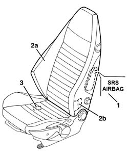
Applies to: all engines; all production periods; only with equipment: GTA
Fit the cover on the top part of the backrest upholstery (head restraint area).
Connect the cover to the structure attaching the retaining hooks in the area of the head restraint.
Continue connecting the cover to the structure gradually attaching all the other retaining hooks and engaging all the strips of velcro.
Mould the cover onto the padding.
Attach the front profile of the backrest cover to the metal structure retainer.
Stick the adhesive retainers fastening the upholstery to the metal structure.
Attach the rear velcro retainers.
Connect the rear edges of the backrest cover, attaching the rear retaining hooks.
Attach the lower ends of the backrest cover to the profile.
Position the backrest folding trim and engage the retainers.
Tighten the bolt.
7045A98 front seat rear pouch panel, lh or rh - r r
7045A44 seat interior guard - r r
7045A43 seat exterior guard - r r
Topics linked from this page (6)
- 5580C air bag system
- 7045A24 squab knob - r r
- 7045A25 squab lumbar knob - r r
- 7045A43 seat exterior guard - r r
- 7045A44 seat interior guard - r r
- 7045A98 front seat rear pouch panel, lh or rh - r r
Topics that link to this page (11)
- O02 FRONT SEAT BACKREST ANGLE ADJUSTMENT NOT WORKING
- 5580C44 front side bag module one lh or rh r r
- 5580C86 side bag wiring harness (one) lh or rh - r r or replace
- 7045A38 device for driver`s seat squab lumbar adjustment - r r with seat removed
- 7045A85 Front seat BACKREST COVER, left or right - R.R.
- 7045A88 Front seat BACKREST UPHOLSTERY, left or right - R.R. with seat removed
- 7045A89 Front seat BACKREST UPHOLSTERY, left or right - R.R .
- 7045A92 Front seat COVER, left or right - R.R. with seat removed
- 7045A93 Front seat TRIM, left or right - R.R .
- 7045L30 Backrest folding control CABLE/ROD - R.R.
- 7045M26 l/h or r/h front seat squab heat pad - r+r following electrical wiring check